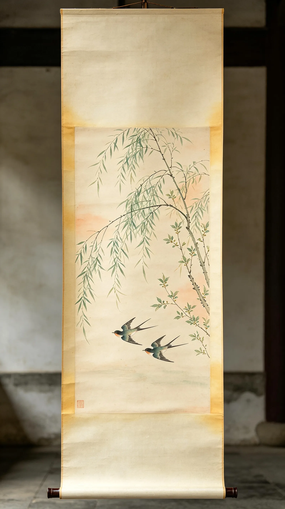

上 下 滑 动 · 纵 览 全 卷

节序
循时
循时
六 卷 · 二 十 四 节 气 · 仪 式 全 闭 环
节 序 循 时
亲手完成每一候的微型仪轨，
在交互中建立对时间秩序的身体感。
孟 春
VOL.01 · EARLY SPRING
卷 一
风 入 屠 苏 ，春 回 万 物
点 击 任 意 处 · 进 入
第 一 卷 · 孟 春
立 春
LICHUN · START OF SPRING
风 入 屠 苏 ，春 回 万 物
孟 春 之 始
咬 春
0
仪 式 进 行 中
0
仪 式 计 数
长 按 茶 盏 0.8 秒 · 注 汤
M萌
S抽
B盈
H藏
第 0 步 / 共 4 步
0%
提 前 收 束
即 将 离 开 仪 式
若此刻离开，物候卷轴停在当前阶段。下次可继续。